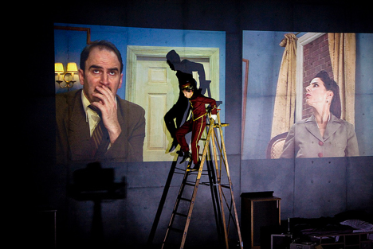

Intermediality
It is a term for all those phenomena that in some way take place between media.
The transdisciplinary discourse on intermediality incorporates the traditions of Interarts Studies and discussions about it within the disciplines of Media Studies as well as investigations into the New Media Poetries, which are based on digital media. The need to recognize “Interart Studies as "Intermediality Studies” arose as much from the perception that there had been a gradual change in the theoretical orientation and practices of interdisciplinary discourse as well as the approximation between the areas of Interart Studies and Media Studies. We should understand intermediality as a comprehensive phenomenon that includes all relations and all topics and subjects traditionally investigated by Interart Studies. Media combination and media transposition are certainly central topics among the studies of intermediality (Clüver 2008).
